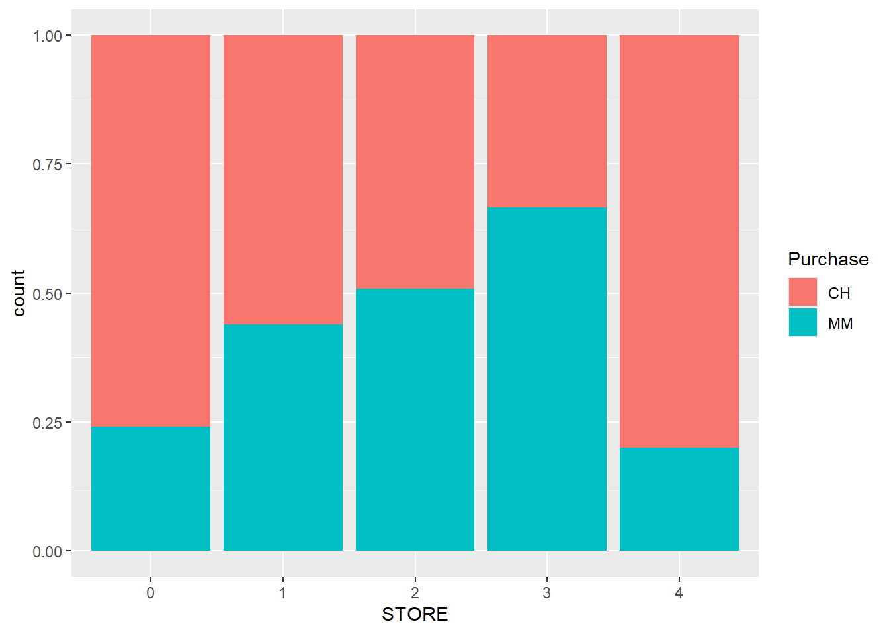
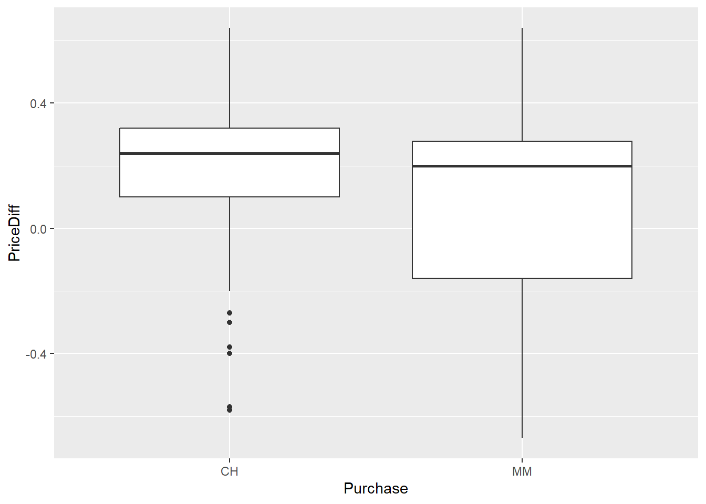
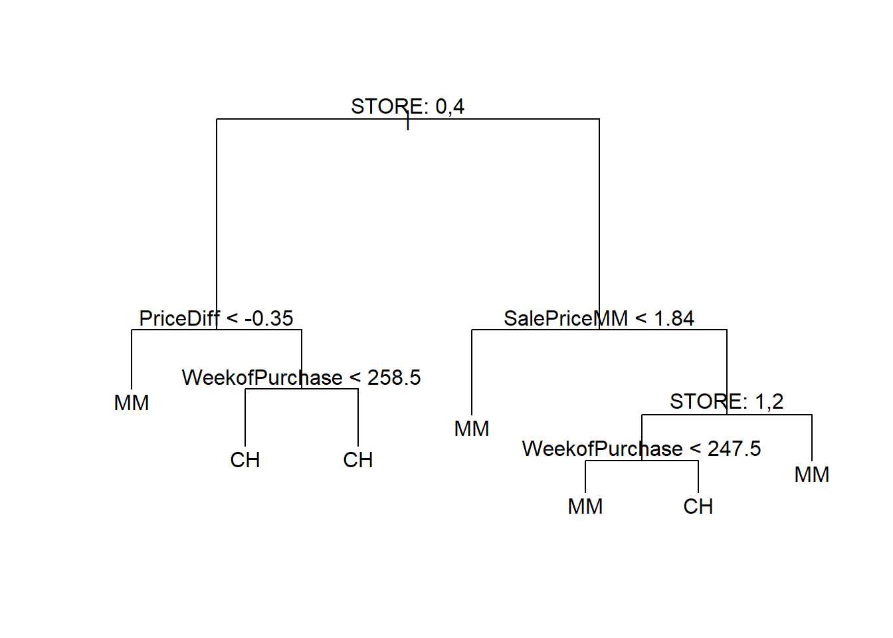
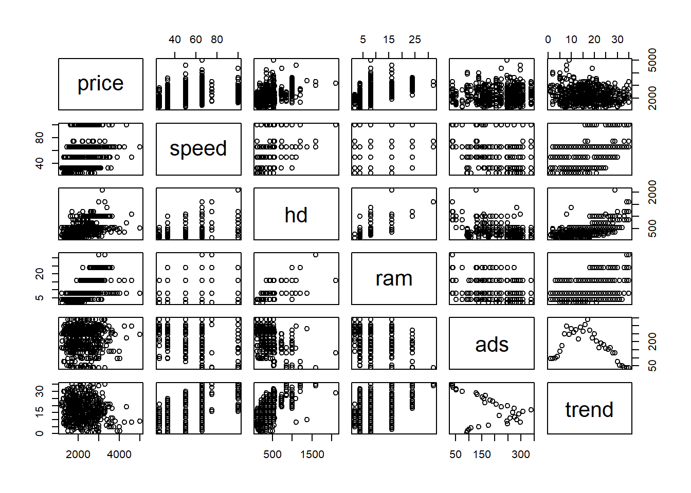
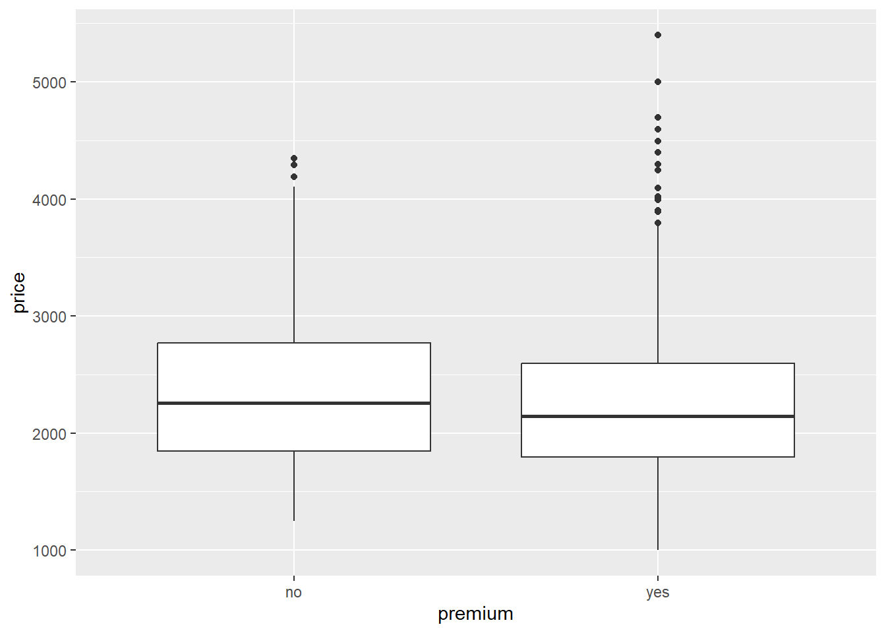
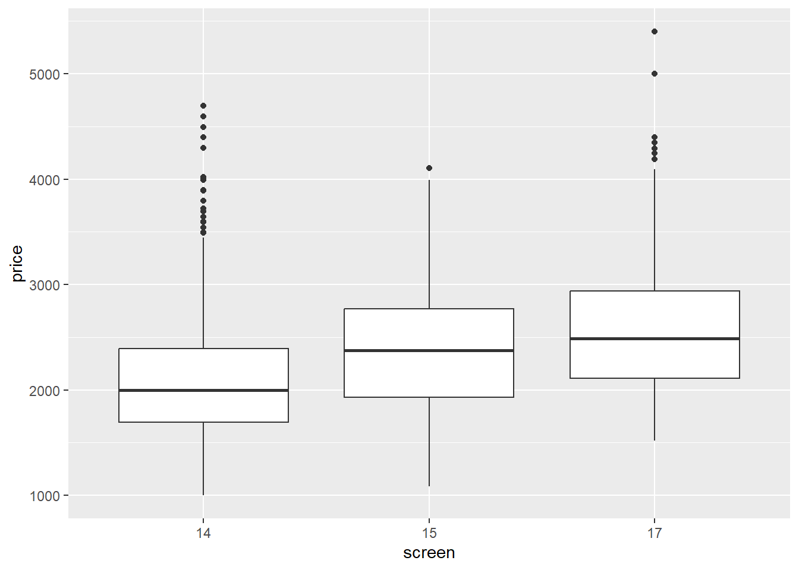
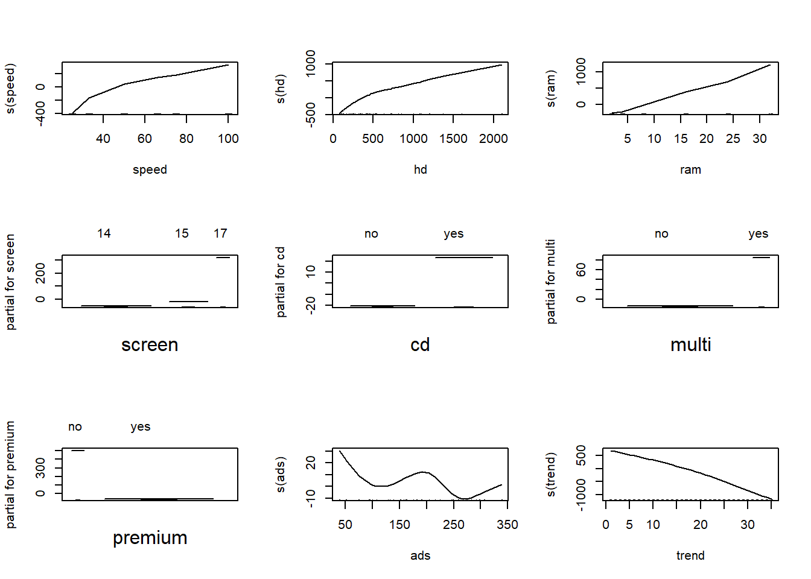
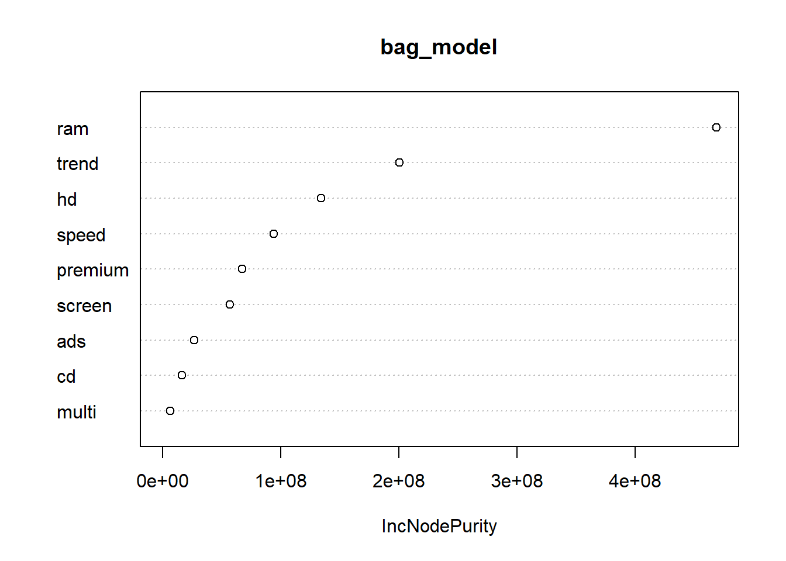

library(tidyverse)
library(ISLR)
library(Ecdat)
library(tree)
library(gam)
library(randomForest)
# Load OJ and Computers datasets for exam tasks.
data(OJ)
data(Computers)BAN404 R Exam Compendium
Comprehensive solution guide — 2022 home exam
0.1 Setup and libraries
0.2 Task 1a
Question: Remove LoyalCH, recode categorical variables if needed, remove unusable variables, and create 50/50 train-test split with set.seed(8655).
How to recognize this method on the exam (The Detective Work): - This is preprocessing and leakage control. - LoyalCH is explicitly unavailable at prediction time. - Duplicate or redundant store fields should be checked.
Step-by-step code:
oj_data <- OJ %>%
select(-LoyalCH, -StoreID) %>%
mutate(across(where(is.character), as.factor))
# Convert low-cardinality numeric variables to factor where meaningful.
# We use cutoff 5 here to mirror the 2022 marking approach for OJ coding fields.
oj_data <- oj_data %>%
mutate(across(where(is.numeric), ~ if (n_distinct(.x) <= 5) as.factor(.x) else .x))
set.seed(8655)
idx <- sample(seq_len(nrow(oj_data)), size = floor(nrow(oj_data) / 2))
train <- oj_data[idx, ]
test <- oj_data[-idx, ]
glimpse(train)Rows: 535
Columns: 16
$ Purchase <fct> CH, CH, CH, MM, MM, CH, CH, MM, MM, MM, CH, MM, MM, CH,…
$ WeekofPurchase <dbl> 273, 271, 232, 259, 277, 260, 272, 240, 274, 232, 261, …
$ PriceCH <dbl> 1.86, 1.86, 1.69, 1.86, 1.99, 1.86, 1.86, 1.79, 1.99, 1…
$ PriceMM <dbl> 2.18, 2.13, 1.99, 2.18, 2.13, 2.13, 2.18, 2.23, 2.09, 1…
$ DiscCH <dbl> 0.00, 0.00, 0.00, 0.00, 0.24, 0.00, 0.00, 0.00, 0.00, 0…
$ DiscMM <dbl> 0.06, 0.00, 0.00, 0.40, 0.00, 0.24, 0.00, 0.00, 0.40, 0…
$ SpecialCH <fct> 0, 0, 1, 0, 0, 0, 0, 0, 0, 1, 0, 0, 0, 0, 0, 0, 0, 0, 1…
$ SpecialMM <fct> 0, 0, 0, 1, 0, 0, 0, 0, 0, 0, 0, 0, 1, 1, 0, 0, 0, 0, 0…
$ SalePriceMM <dbl> 2.12, 2.13, 1.99, 1.78, 2.13, 1.89, 2.18, 2.23, 1.69, 1…
$ SalePriceCH <dbl> 1.86, 1.86, 1.69, 1.86, 1.75, 1.86, 1.86, 1.79, 1.99, 1…
$ PriceDiff <dbl> 0.26, 0.27, 0.30, -0.08, 0.38, 0.03, 0.32, 0.44, -0.30,…
$ Store7 <fct> No, Yes, No, No, No, Yes, No, No, No, No, Yes, No, Yes,…
$ PctDiscMM <dbl> 0.027523, 0.000000, 0.000000, 0.183486, 0.000000, 0.112…
$ PctDiscCH <dbl> 0.000000, 0.000000, 0.000000, 0.000000, 0.120603, 0.000…
$ ListPriceDiff <dbl> 0.32, 0.27, 0.30, 0.32, 0.14, 0.27, 0.32, 0.44, 0.10, 0…
$ STORE <fct> 2, 0, 1, 2, 1, 0, 1, 3, 3, 2, 0, 2, 0, 1, 4, 3, 0, 4, 0…AAA-Grade Written Answer: I removed LoyalCH because the exam states it is not available when predicting. I also removed StoreID because STORE already captures store identity. Data were split 50/50 with the required seed for reproducible evaluation.
0.3 Task 1b
Question: Use descriptive statistics to detect promising predictors for Purchase, present key tables/graphs, and comment.
How to recognize this method on the exam (The Detective Work): - Binary outcome with mixed predictors suggests boxplots, bar plots, and grouped means. - Goal is feature screening before logistic/tree modeling.
Step-by-step code:
# Example descriptive plots.
train %>% ggplot(aes(x = STORE, fill = Purchase)) + geom_bar(position = "fill")
train %>% ggplot(aes(x = Purchase, y = PriceDiff)) + geom_boxplot()
# Grouped summaries for discount variables.
train %>%
group_by(Purchase) %>%
summarise(
mean_pct_disc_ch = mean(PctDiscCH, na.rm = TRUE),
mean_pct_disc_mm = mean(PctDiscMM, na.rm = TRUE)
)# A tibble: 2 × 3
Purchase mean_pct_disc_ch mean_pct_disc_mm
<fct> <dbl> <dbl>
1 CH 0.0379 0.0460
2 MM 0.0159 0.0848AAA-Grade Written Answer: PriceDiff, STORE, and discount variables show clear associations with brand choice. These are therefore strong candidates for predictive classification models.
0.4 Task 1c
Question: Fit logistic regression of Purchase on promising variables, evaluate with test accuracy and confusion matrix, and use threshold 0.5.
How to recognize this method on the exam (The Detective Work): - Binary response and probability threshold imply logistic regression. - Must report class performance, not only one scalar metric.
Step-by-step code:
logit1 <- glm(Purchase ~ PriceDiff + STORE, data = train, family = binomial())
summary(logit1)
Call:
glm(formula = Purchase ~ PriceDiff + STORE, family = binomial(),
data = train)
Coefficients:
Estimate Std. Error z value Pr(>|z|)
(Intercept) -0.7678 0.1826 -4.204 2.62e-05 ***
PriceDiff -2.4588 0.3975 -6.186 6.16e-10 ***
STORE1 0.6979 0.3059 2.282 0.0225 *
STORE2 1.1550 0.2658 4.346 1.39e-05 ***
STORE3 1.8724 0.2945 6.357 2.05e-10 ***
STORE4 -0.3935 0.3551 -1.108 0.2678
---
Signif. codes: 0 '***' 0.001 '**' 0.01 '*' 0.05 '.' 0.1 ' ' 1
(Dispersion parameter for binomial family taken to be 1)
Null deviance: 714.98 on 534 degrees of freedom
Residual deviance: 606.08 on 529 degrees of freedom
AIC: 618.08
Number of Fisher Scoring iterations: 4prob_logit <- predict(logit1, newdata = test, type = "response")
pred_logit <- if_else(prob_logit > 0.5, "MM", "CH") %>% factor(levels = levels(test$Purchase))
cm_logit <- table(actual = test$Purchase, predicted = pred_logit)
cm_logit predicted
actual CH MM
CH 261 65
MM 86 123sum(diag(cm_logit)) / sum(cm_logit)[1] 0.717757prop.table(cm_logit, margin = 1) predicted
actual CH MM
CH 0.8006135 0.1993865
MM 0.4114833 0.5885167AAA-Grade Written Answer: The logistic model with PriceDiff and STORE gives meaningful predictive power and interpretable signs. Negative effect of PriceDiff is expected because higher CH relative price reduces CH purchase probability.
0.5 Task 1d
Question: Fit classification tree with all variables retained from 1a, plot and interpret one branch, and evaluate with threshold 0.5.
How to recognize this method on the exam (The Detective Work): - Tree request plus branch interpretation means explicit decision-rule explanation is required.
Step-by-step code:
tree1 <- tree(Purchase ~ ., data = train)
plot(tree1)
text(tree1, pretty = 0)
prob_tree <- predict(tree1, newdata = test)
pred_tree <- if_else(prob_tree[, "MM"] > 0.5, "MM", "CH") %>% factor(levels = levels(test$Purchase))
cm_tree <- table(actual = test$Purchase, predicted = pred_tree)
cm_tree predicted
actual CH MM
CH 235 91
MM 65 144sum(diag(cm_tree)) / sum(cm_tree)[1] 0.7084112prop.table(cm_tree, margin = 1) predicted
actual CH MM
CH 0.7208589 0.2791411
MM 0.3110048 0.6889952AAA-Grade Written Answer: The tree provides transparent if-then purchase logic and often predicts MM better than CH for some branches. Its interpretability is high, though performance can be similar to or slightly below tuned logistic regression.
0.6 Task 1e
Question: Use cross-validation to find threshold that maximizes accuracy and evaluate tree with best threshold.
How to recognize this method on the exam (The Detective Work): - This is threshold tuning, not model-refitting. - Use inner split or validation split on training data, then test once.
Step-by-step code:
set.seed(4598)
idx2 <- sample(seq_len(nrow(train)), size = floor(nrow(train) / 2))
train2 <- train[idx2, ]
val2 <- train[-idx2, ]
tree2 <- tree(Purchase ~ ., data = train2)
prob_val <- predict(tree2, newdata = val2)[, "MM"]
th_grid <- seq(0.1, 0.9, by = 0.05)
acc_tbl <- map_dfr(th_grid, function(th) {
pred <- if_else(prob_val > th, "MM", "CH") %>% factor(levels = levels(val2$Purchase))
cm <- table(val2$Purchase, pred)
tibble(threshold = th, accuracy = sum(diag(cm)) / sum(cm))
})
th_opt <- acc_tbl %>% slice_max(accuracy, n = 1) %>% pull(threshold)
prob_test <- predict(tree1, newdata = test)[, "MM"]
pred_test_opt <- if_else(prob_test > th_opt, "MM", "CH") %>% factor(levels = levels(test$Purchase))
cm_test_opt <- table(test$Purchase, pred_test_opt)
acc_tbl# A tibble: 17 × 2
threshold accuracy
<dbl> <dbl>
1 0.1 0.511
2 0.15 0.567
3 0.2 0.597
4 0.25 0.612
5 0.3 0.612
6 0.35 0.612
7 0.4 0.612
8 0.45 0.660
9 0.5 0.649
10 0.55 0.649
11 0.6 0.649
12 0.65 0.649
13 0.7 0.649
14 0.75 0.649
15 0.8 0.597
16 0.85 0.597
17 0.9 0.590th_opt[1] 0.45sum(diag(cm_test_opt)) / sum(cm_test_opt)[1] 0.7084112AAA-Grade Written Answer: Cross-validated threshold tuning aligns class decisions with empirical accuracy rather than default 0.5. In this exam data, gains can be modest depending on class balance and calibration.
0.7 Task 1f
Question: Repeat analysis with LoyalCH now assumed available and conclude if it contributes for logistic and tree models.
How to recognize this method on the exam (The Detective Work): - This is a controlled ablation comparison. - Keep same evaluation process and compare confusion metrics.
Step-by-step code:
oj_with_loyal <- OJ %>%
select(-StoreID) %>%
mutate(across(where(is.character), as.factor))
set.seed(8655)
idx_loyal <- sample(seq_len(nrow(oj_with_loyal)), size = floor(nrow(oj_with_loyal) / 2))
train_loyal <- oj_with_loyal[idx_loyal, ]
test_loyal <- oj_with_loyal[-idx_loyal, ]
logit_loyal <- glm(Purchase ~ ., data = train_loyal, family = binomial())
pred_logit_loyal <- if_else(predict(logit_loyal, newdata = test_loyal, type = "response") > 0.5, "MM", "CH") %>%
factor(levels = levels(test_loyal$Purchase))
acc_logit_loyal <- mean(pred_logit_loyal == test_loyal$Purchase)
tree_loyal <- tree(Purchase ~ ., data = train_loyal)
pred_tree_loyal <- if_else(predict(tree_loyal, newdata = test_loyal)[, "MM"] > 0.5, "MM", "CH") %>%
factor(levels = levels(test_loyal$Purchase))
acc_tree_loyal <- mean(pred_tree_loyal == test_loyal$Purchase)
tibble(model = c("logit with LoyalCH", "tree with LoyalCH"), accuracy = c(acc_logit_loyal, acc_tree_loyal))# A tibble: 2 × 2
model accuracy
<chr> <dbl>
1 logit with LoyalCH 0.841
2 tree with LoyalCH 0.830AAA-Grade Written Answer: Including LoyalCH usually improves both logistic and tree predictions materially because loyalty is directly informative for brand choice. The improvement confirms it is a high-value predictor when available.
0.8 Task 2a
Question: Recode factors and remove unusable variables for Computers, split 50/50 with set.seed(4598).
How to recognize this method on the exam (The Detective Work): - Continuous target regression setup with mixed predictors. - Low-cardinality fields like cd, multi, premium, screen should be factors.
Step-by-step code:
comp <- Computers %>%
mutate(
screen = as.factor(screen),
cd = as.factor(cd),
multi = as.factor(multi),
premium = as.factor(premium)
)
set.seed(4598)
idxc <- sample(seq_len(nrow(comp)), size = floor(nrow(comp) / 2))
train_c <- comp[idxc, ]
test_c <- comp[-idxc, ]
glimpse(train_c)Rows: 3,129
Columns: 10
$ price <dbl> 2258, 1854, 2190, 2299, 1645, 1195, 2444, 2290, 3194, 3304, 14…
$ speed <dbl> 66, 33, 100, 50, 33, 25, 50, 50, 100, 66, 25, 33, 33, 66, 50, …
$ hd <dbl> 730, 426, 214, 230, 214, 214, 426, 130, 1000, 420, 214, 528, 1…
$ ram <dbl> 8, 8, 4, 4, 4, 4, 8, 4, 24, 16, 4, 16, 24, 8, 2, 8, 8, 4, 8, 1…
$ screen <fct> 17, 14, 15, 14, 14, 14, 14, 14, 15, 17, 15, 14, 15, 14, 15, 15…
$ cd <fct> yes, yes, no, no, no, no, no, no, yes, yes, no, yes, yes, yes,…
$ multi <fct> yes, no, no, no, no, no, no, no, no, no, no, no, no, no, no, n…
$ premium <fct> yes, yes, yes, yes, yes, yes, yes, yes, yes, yes, yes, yes, ye…
$ ads <dbl> 182, 273, 273, 176, 225, 248, 275, 108, 152, 307, 339, 273, 20…
$ trend <dbl> 24, 18, 18, 6, 19, 20, 12, 4, 26, 16, 17, 18, 21, 21, 11, 27, …AAA-Grade Written Answer: Categorical hardware-option fields were encoded as factors, and the data were split reproducibly with the requested seed. This prepares a valid baseline for all subsequent regression and tree models.
0.9 Task 2b
Question: Use descriptive statistics to find promising predictors and comment.
How to recognize this method on the exam (The Detective Work): - Numeric target with many predictors suggests scatterplots and grouped boxplots.
Step-by-step code:
# Global plot matrix style view.
pairs(train_c %>% select(price, speed, hd, ram, ads, trend) %>% sample_n(500))
# Factor-wise price comparisons.
train_c %>% ggplot(aes(x = premium, y = price)) + geom_boxplot()
train_c %>% ggplot(aes(x = screen, y = price)) + geom_boxplot()
AAA-Grade Written Answer: Speed, RAM, hard-disk size, and trend variables are clearly associated with price, and categorical options such as premium status and screen size show substantial shifts in price level.
0.10 Task 2c
Question: Fit linear regression with all explanatory variables, interpret coefficients, and evaluate predictions.
How to recognize this method on the exam (The Detective Work): - Baseline full OLS model with test MSE for continuous prediction quality.
Step-by-step code:
lm_full <- lm(price ~ ., data = train_c)
summary(lm_full)
Call:
lm(formula = price ~ ., data = train_c)
Residuals:
Min 1Q Median 3Q Max
-1092.33 -175.81 -8.33 144.98 1952.13
Coefficients:
Estimate Std. Error t value Pr(>|t|)
(Intercept) 2020.70893 30.33070 66.623 < 2e-16 ***
speed 9.34193 0.25816 36.187 < 2e-16 ***
hd 0.80181 0.03867 20.736 < 2e-16 ***
ram 49.09392 1.50968 32.519 < 2e-16 ***
screen15 50.62973 11.76869 4.302 1.74e-05 ***
screen17 399.06831 16.82983 23.712 < 2e-16 ***
cdyes 59.16985 13.52546 4.375 1.26e-05 ***
multiyes 109.11924 16.33084 6.682 2.78e-11 ***
premiumyes -500.65735 16.92124 -29.588 < 2e-16 ***
ads 0.65687 0.07381 8.900 < 2e-16 ***
trend -51.56800 0.89310 -57.741 < 2e-16 ***
---
Signif. codes: 0 '***' 0.001 '**' 0.01 '*' 0.05 '.' 0.1 ' ' 1
Residual standard error: 276.7 on 3118 degrees of freedom
Multiple R-squared: 0.781, Adjusted R-squared: 0.7803
F-statistic: 1112 on 10 and 3118 DF, p-value: < 2.2e-16pred_lm_full <- predict(lm_full, newdata = test_c)
mse_lm_full <- mean((test_c$price - pred_lm_full)^2)
mse_lm_full[1] 72200AAA-Grade Written Answer: The full OLS model provides strong explanatory power and interpretable marginal effects. Test MSE gives a direct and appropriate prediction-performance measure for this continuous outcome.
0.11 Task 2d
Question: Check whether regressing log(price) improves predictions versus direct-price model.
How to recognize this method on the exam (The Detective Work): - Log transformation can stabilize variance and linearize multiplicative effects. - Predictions must be back-transformed to original price scale for fair MSE comparison.
Step-by-step code:
train_c2 <- train_c %>% mutate(log_price = log(price))
test_c2 <- test_c %>% mutate(log_price = log(price))
lm_log <- lm(log_price ~ . - price, data = train_c2)
pred_log_back <- exp(predict(lm_log, newdata = test_c2))
mse_lm_log <- mean((test_c2$price - pred_log_back)^2)
mse_lm_log[1] 72610.7AAA-Grade Written Answer: If log transformation captures nonlinearity and heteroskedasticity better, the back-transformed model can improve test MSE. In this exam, improvement was not guaranteed and must be judged empirically.
0.12 Task 2e
Question: Fit a GAM, plot results, evaluate predictions, and discuss whether all variables should be nonlinear.
How to recognize this method on the exam (The Detective Work): - GAM request means smooth terms for selected numeric predictors. - Not every variable benefits from a smooth; some are effectively linear.
Step-by-step code:
gam_full <- gam(
price ~ s(speed) + s(hd) + s(ram) + screen + cd + multi + premium + s(ads) + s(trend),
data = train_c
)
par(mfrow = c(3, 3))
plot(gam_full)
pred_gam <- predict(gam_full, newdata = test_c)
mse_gam <- mean((test_c$price - pred_gam)^2)
mse_gam[1] 60947.91AAA-Grade Written Answer: GAM often yields lower test MSE by capturing smooth nonlinear effects in hardware and time variables. If a smooth appears near-linear, constraining that predictor to linear form can improve interpretability with little performance cost.
0.13 Task 2f
Question: Briefly explain backfitting and when GAM can be fitted with OLS.
How to recognize this method on the exam (The Detective Work): - Conceptual algorithm explanation is required. - OLS link appears when smooth functions are represented in linear basis expansions.
Step-by-step code:
# Demonstration: spline basis turns nonlinear term into linear regression on basis columns.
library(splines)
basis_speed <- bs(train_c$speed, df = 4)
ols_basis <- lm(train_c$price ~ basis_speed)
summary(ols_basis)
Call:
lm(formula = train_c$price ~ basis_speed)
Residuals:
Min 1Q Median 3Q Max
-1166.88 -416.88 -72.57 357.12 2987.12
Coefficients:
Estimate Std. Error t value Pr(>|t|)
(Intercept) 1827.35 32.09 56.940 < 2e-16 ***
basis_speed1 345.63 63.86 5.413 6.68e-08 ***
basis_speed2 409.75 98.43 4.163 3.23e-05 ***
basis_speed3 858.42 122.26 7.021 2.69e-12 ***
basis_speed4 652.35 46.05 14.166 < 2e-16 ***
---
Signif. codes: 0 '***' 0.001 '**' 0.01 '*' 0.05 '.' 0.1 ' ' 1
Residual standard error: 554.8 on 3124 degrees of freedom
Multiple R-squared: 0.1178, Adjusted R-squared: 0.1167
F-statistic: 104.3 on 4 and 3124 DF, p-value: < 2.2e-16AAA-Grade Written Answer: Backfitting iteratively updates each additive component against residuals from the other components until convergence. GAM can be estimated with OLS when each smooth is expressed via basis functions, turning the model into linear regression in transformed predictors.
0.14 Task 2g
Question: Use bagged trees to predict price, evaluate, compute and interpret variable importance, and explain its logic.
How to recognize this method on the exam (The Detective Work): - Bagging is random forest with mtry equal to number of predictors in regression case. - Importance for regression is commonly decrease in node impurity.
Step-by-step code:
p <- ncol(train_c) - 1
bag_model <- randomForest(price ~ ., data = train_c, mtry = p, ntree = 100)
pred_bag <- predict(bag_model, newdata = test_c)
mse_bag <- mean((test_c$price - pred_bag)^2)
mse_bag[1] 28058.82varImpPlot(bag_model)
importance(bag_model) IncNodePurity
speed 93849163
hd 134162240
ram 468646617
screen 57091402
cd 16417401
multi 6366788
premium 67314847
ads 26917186
trend 200528770AAA-Grade Written Answer: Bagging typically improves prediction substantially by averaging many bootstrap trees, reducing model variance. Importance reflects average contribution to impurity reduction across trees and highlights which predictors drive predictive splits.
0.15 Task 2h
Question: Give a brief explanation of bagging.
How to recognize this method on the exam (The Detective Work): - Pure concept question about ensemble strategy and variance reduction.
Step-by-step code:
# Simple bootstrap-aggregation demonstration with means.
set.seed(1)
vec <- train_c$price
boot_means <- replicate(200, mean(sample(vec, size = length(vec), replace = TRUE)))
mean(boot_means)[1] 2231.72sd(boot_means)[1] 9.309335AAA-Grade Written Answer: Bagging repeatedly fits the same base learner on bootstrap samples and averages predictions. This aggregation reduces variance and usually improves stability and test performance over a single tree.
1 💡 Generalizable Tips and Tricks (2022 Exam)
| Tip | Why it matters | Reusable snippet |
|---|---|---|
| Remove unavailable predictors | Prevents leakage and unrealistic performance | select(-LoyalCH) |
| Tune threshold separately from model | Improves class decisions without changing fit | seq(0.1, 0.9, by = 0.05) |
| Evaluate both classes | Overall accuracy can hide class-specific errors | prop.table(table(actual, pred), margin = 1) |
| Back-transform log models before MSE | Keeps prediction error on business scale | exp(predict(log_model, newdata=test)) |
| Use GAM selectively | Not all numeric effects need smooth terms | gam(y ~ s(x1) + x2 + factor_var) |
| Bagging equals RF with full mtry | Easy way to implement tree averaging | randomForest(y ~ ., mtry = p) |